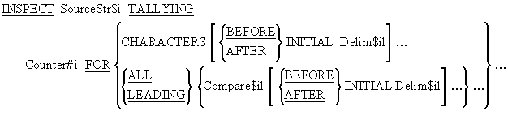
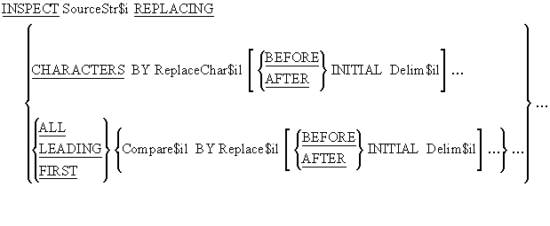
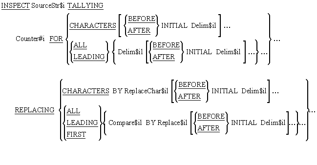
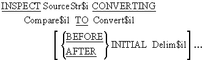

-
Introduction
Unit aims, objectives, prerequisites and a legend for this unit's syntax diagrams. - Using the INSPECT
The INSPECT is introduced by looking at an example program. The way the INSPECT works is explained and its modifying phrases are explored. - The counting format
Presents the syntax and rules of the counting format of the INSPECT. - The replacing format
Presents the syntax and rules of the replacing format of the INSPECT - The combined format
This version combines the syntax and rules of the other two formats. The syntax of this combined format is presented. -
The converting format
Presents the syntax and rules of the converting format of the INSPECT.
|
|
Using the INSPECT |
|||
Introduction |
The INSPECT has four formats;
|
||
Example program Counting letter occurences using the INSPECT |
|
||
How the INSPECT works. |
The INSPECT scans the source string from left to right counting, replacing or converting characters under the control of the TALLYING, REPLACING or CONVERTING phrases. The behavior of the INSPECT is modified by using the LEADING, FIRST, BEFORE and AFTER phrases. An ALL, LEADING, CHARACTERS, FIRST or CONVERTING phrase may only be followed by one BEFORE and one AFTER phrase. |
||
The modifying phrases |
The LEADING phrase causes counting/replacement of all Compare$il characters from the first valid one encountered to the first invalid one. The FIRST phrase causes only the first valid character to be replaced. The BEFORE phrase designates as valid those characters to the left of the delimiter associated with it. The AFTER phrase designates as valid those characters to the right of the delimiter associated with it. If the delimiter is not present in the SourceStr$i then using the BEFORE phrase implies the whole string and using the AFTER phrase implies no characters at all. |
||
|
|
The counting INSPECT |
|
Syntax This format of the Inspect is used to count characters in a string. |
|
Notes |
If Compare$il or Delim$il is a figurative constant it is 1 character in size. An ALL, LEADING or CHARACTERS phrase can have not more than one BEFORE and one AFTER phrase following it. |
Examples |
|
|
|
The replacing INSPECT |
|
Syntax This format of the INSPECT is used to count characters in a string. |
|
Rules |
The sizes of Compare$il and Replace$il must be equal. When Replace$il is a figurative constant its size equals that of Compare$il. When there is a CHARACTERS phrase, the size of ReplaceChar$il and the delimiter which may follow it (Delim$il) must be one character. If Compare$il, Delim$il or Replace$il is a figurative constant it is 1 character in size. |
Example 1
|
The following examples work on the data in StringData to produce the results shown in the storage schematic below. Click on the storage schematic to see the result of each of these INSPECT statements (use left click or PageDown for next item and right click or PageUp for previsou item) .
|
Example 2 |
This example inspects the string TextLine and checks it for each of the 4 letter swear words in the table. If one is found it is replaced by the text *#@!. |
Example 3
|
In this example we want to create an edited item with a floating Rouble currency symbol instead of a floating dollar sign. To achieve we use a picture clause edited with a floating dollar sign and then we use the INSPECT to replace the dollar sign with the Rouble symbol "R". This works because when a value is moved into an edited item the editing is immediately applied to the value. Click on the diagram below to see how this use of the INSPECT works (use left click or PageDown for next item and right click or PageUp for previsou item) . |
|
|
The combined INSPECT |
|
Syntax This format of the INSPECT combines the syntactic elements of the previous two formats allowing both counting and replacing to be done in one statement. |
|
|
The converting INSPECT |
|
Syntax |
|
How this format of the INSPECT works |
The INSPECT..CONVERTING works on individual characters. Compare$il is a list of characters that will be replaced with the characters in Convert$il on a one for one basis. For instance the statement - replaces "a" with "X", "b" with "Y" and "c" with "Z". |
Rules |
|
Example 1
|
The following examples work on the data in StringData to produce the results shown in the storage schematic below. Click on the storage schematic to see the result of each of these INSPECT statements (use left click or PageDown for next item and right click or PageUp for previsou item).
|
Example 2 |
This example shows how the INSPECT..CONVERTING can be used to implement a simple encoding mechanism. It converts the character 0 to character 5, 1 to 2, 2 to 9, 3 to 8 etc. Conversion starts when the word "codeon" is encountered in the string and stops when "codeoff" is encountered. |
Example 3 |
In this example, the INSPECT..CONVERTING is used to convert upper case letters to lower case and visa versa. The first INSPECT shows how we can convert the characters using string literals and the next two show how storing the strings in data items makes the conversion operation more versatile. Actually, these days we can do this with the UPPER-CASE and LOWER-CASE Intrinsic Functions. |
|
|
Copyright NoticeThese COBOL course materials are the copyright property of Michael Coughlan. All rights reserved. No part of these course materials may be reproduced in any form or by any means - graphic, electronic, mechanical, photocopying, printing, recording, taping or stored in an information storage and retrieval system - without the written permission of the author. (c) Michael Coughlan |